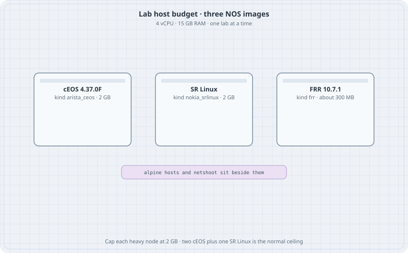

Lab Host and the Image Set
Lab Host and the Image Set
This part is the hands-on track for the lab machine that already has Arista cEOS, Nokia SR Linux, and FRR loaded. The earlier chapters teach the same protocols on free images. Here the point is to see one behaviour in three command languages, on hardware you can actually start.

Learning goals
By the end of this chapter you can:
- Reach the lab host and see which images are loaded
- Stay inside the memory budget of a 4-vCPU, 15 GB machine
- Deploy and destroy a Containerlab topology without leaving it running
- Push a config into cEOS, SR Linux, and FRR after the node is actually ready
What is on the machine
Inventory taken on 2026-11-12. Re-check with docker images before you trust a tag.
| Role | Tag on the host | Kind | Notes |
|---|---|---|---|
| Switching and EOS CLI | ceos:4.37.0F |
arista_ceos |
Also tagged ceos:latest. Image id cb0f822d3229. |
| Model-driven NOS | ghcr.io/nokia/srlinux:latest |
nokia_srlinux |
Also tagged srlinux:latest. Created 2026-08-19. Image id 0096fe3ebcaf. Pin this id before a later pull of latest. |
| Open routing suite | quay.io/frrouting/frr:containerlab-10.7.1 |
frr |
Also tagged frr:containerlab. Image id f7d98e4faa24. |
| Host | alpine:latest |
linux |
Busybox ip and ping are enough for these labs. |
| Capture and tools | nicolaka/netshoot:latest, ghcr.io/srl-labs/network-multitool:latest |
linux |
Optional. Use one when you want tcpdump or mtr without installing on Alpine. |
| gNMI client | ghcr.io/openconfig/gnmic:latest |
run with docker run |
Used in the gNMI chapter. Not a topology node by default. |
| Drawings | ghcr.io/srl-labs/clab-io-draw:latest |
tool | clab graph can render a topology after it deploys. |
Containerlab on the host is 0.83.0. Short kind names ceos, srl, and frr still parse. The long names above are the ones these labs use.
The host has 4 vCPUs and 15 GB of RAM, with a large data disk. Labs live under /data/labs. A Python virtualenv at /data/labs/venv already has Ansible, Netmiko, and Scrapli. These labs do not need that venv. They are Containerlab files plus CLI.
cEOS is not a free image. This book does not tell you how to download it and does not ship the image. The labs assume the tag is already present, which it is on this host.
How big a lab can be
| Node | Cap used in these labs | Practical count |
|---|---|---|
| cEOS | memory: 2G |
2, or 3 if nothing else heavy is up |
| SR Linux | memory: 2G |
1 beside the cEOS pair |
| FRR | a few hundred MB | several |
| Alpine | tens of MB | several |
Two cEOS nodes plus one SR Linux node is about 6 GB before the host’s own services. That fits. Four cEOS nodes, or a cEOS pair plus two SR Linux nodes, does not leave a safe margin. Destroy a lab before you deploy the next one.
containerlab destroy -t topology.clab.yml --cleanup--cleanup removes the lab directory, including saved configs. Copy anything you want to keep first.
Reach the host
From the workstation that already has the SSH alias:
ssh ubutail
cd /data/labs
mkdir -p 02-forwarding && cd 02-forwardingDo not publish the host’s addresses or key paths. The alias is enough.
Credentials the labs use
| NOS | How you get a CLI | Default login |
|---|---|---|
| cEOS | docker exec -it clab-<lab>-<node> Cli |
admin / admin |
| FRR containerlab image | ssh admin@clab-<lab>-<node> opens vtysh, or docker exec -it ... vtysh |
admin / admin for SSH. Keys on the host also work. |
| SR Linux | docker exec -it clab-<lab>-<node> sr_cli |
admin / NokiaSrl1! |
cEOS takes one to two minutes after deploy before Cli answers. SR Linux is similar. FRR is ready when vtysh connects.
Push a config
Wait, then send the CLI. Example for a lab named forward:
until docker exec clab-forward-r-ceos Cli -c "show hostname" >/dev/null 2>&1
do sleep 5; done
docker exec clab-forward-r-ceos Cli -p 15 -c "
enable
configure terminal
interface Ethernet1
no switchport
ip address 10.1.12.2/30
end
write memory
"SR Linux, one candidate commit:
docker exec -i clab-forward-r-srl sr_cli <<'EOF'
enter candidate
set interface ethernet-1/1 admin-state enable
set interface ethernet-1/1 subinterface 0 admin-state enable
set interface ethernet-1/1 subinterface 0 ipv4 admin-state enable
set interface ethernet-1/1 subinterface 0 ipv4 address 10.1.13.2/30
commit now
quit
EOFIf a set path is rejected, stop and tab-complete that leaf on this image. The SR Linux tag is latest. The command shape is stable. A leaf name can move.
FRR takes a startup-config file. The frr kind writes it to frr.conf and starts the daemons you list. zebra always starts.
r-frr:
kind: frr
image: quay.io/frrouting/frr:containerlab-10.7.1
startup-config: r-frr.frr.conf
daemons: [ospfd]Kind defaults used in every lab
topology:
kinds:
arista_ceos:
image: ceos:4.37.0F
memory: 2G
nokia_srlinux:
image: ghcr.io/nokia/srlinux:latest
memory: 2G
frr:
image: quay.io/frrouting/frr:containerlab-10.7.1Data interfaces are eth1, eth2, and so on in the topology file for cEOS and FRR. Inside EOS those are Ethernet1, Ethernet2. Inside SR Linux the topology name ethernet-1/1 is the port. eth0 is management on all three. Do not put a lab prefix on eth0.
Link addresses on a cEOS ipv4: field make Containerlab configure no switchport and the address after boot. Use that only on routed labs. A VLAN lab must not set ipv4 on a switchport.
What this track covers
The spread matches the work of an associate-level track and a professional-level track: switching, IPv4 and IPv6, first hop, OSPF, IS-IS, BGP, policy, ACLs, NAT, DHCP, VXLAN, EVPN, and a management API. Later chapters add path MTU, STP edge guards, DHCP snooping, MLAG, VRF-lite, stub areas, redistribution, MED, policy routing, uRPF, SPAN, GRE, a control-plane ACL, SLAAC, NTP, and delay. It is not an exam blueprint, and it does not use exam question banks.
| You will build | Chapter |
|---|---|
| Image budget and CLI push | this chapter |
| IPv4 forwarding across three NOSes | Three-Router Forwarding |
| Interfaces and LLDP | cEOS Interfaces and LLDP |
| Access, trunk, STP, LACP | the switching chapters |
| SVI, DHCP, VRRP, VARP | the first-hop chapters |
| Statics, OSPF, IS-IS | the IGP chapters |
| eBGP, reflection, policy | the BGP chapters |
| ACL and NAT | ACLs and Edge NAT |
| IPv6 on the triangle | IPv6 on the Same Triangle |
| VXLAN and EVPN | the overlay chapters |
| gNMI | Reading SR Linux with gNMI |
| Break the design on purpose | Production Failure Drills |
| Path MTU and TCP MSS | Path MTU and TCP MSS |
| Portfast, BPDU guard, root guard | STP Edge Guards |
| DHCP snooping and DAI | DHCP Snooping and ARP Inspection |
| MLAG | MLAG on cEOS |
| Overlapping VRFs | VRF-Lite |
| Stub areas and summaries | OSPF Stub, NSSA, and Summary |
| Redistribution tags | Redistribution and Route Tags |
| MED, prepend, ECMP | BGP MED, Prepend, and ECMP |
| Policy routing | Policy-Based Routing |
| Strict uRPF | Unicast RPF |
| A copied port | SPAN |
| GRE between loopbacks | GRE over the Underlay |
| For-us versus transit | Control-Plane ACL |
| Router advertisements | IPv6 SLAAC |
| NTP and syslog | NTP and Syslog |
| A delay you can measure | DSCP Trust and Measured Delay |
| OSPF MD5 | OSPF Authentication |
These images do not give you a wireless LAN, a voice gateway, an SD-WAN controller, or a service-provider MPLS VPN lab. Those stay out of this part rather than being faked.
Rule for every later chapter
- One lab directory under
/data/labs. containerlab deploy -t topology.clab.ymlfrom that directory.- Wait until the CLI answers.
- Check the table in the chapter before you call the lab done.
containerlab destroy -t topology.clab.yml --cleanupbefore the next lab.
None of the labs in this part were left running on the host. The topologies match Containerlab 0.83 and the image tags above. Boot them yourself and keep the show output.